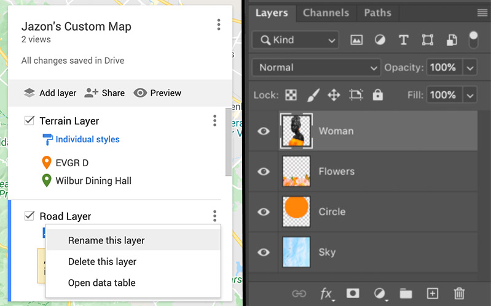

The Story View / Hide #
Click "View" to read about my feelings about this internship, as well as what I learned from it.
JavaScript — Vue.js, three.jsTuSimple is a company focused on self-driving trucks. However, I wasn't responsible for the autonomous driving algorithm—that's for the ML engineers. As a full-stack SWE, I build internal infrastructure that supports autonomous trucks, namely a Map Editor.
Like many autonomous vehicle companies, TuSimple has an internal high-precision map dataset, used for navigating their self-driving trucks. The Map Editor is a single-page application built for visualizing and editing the map.
My internship involves adding features to this Editor. Since it's an internal tool, I cannot show image demos of my own work.
Description: This feature is similar to the "Street View" functionality of Google Maps: given a coordinate on the road map, display images taken at this location.

Google Maps Street View, for reference
Back-end: I used an internal Python API to query images: given a location, iterate through a dataset to find all images taken within a 50-meter radius. If the result was cached, return the cached results. As the query progresses, the program transmits the binary image files to the front-end.
Front-end: I wrote a Vue component to create a window that displays these images and shows their properties (date captured, etc.).
Description: The map consists of many "layers". For each layer, you can add elements into it, export it, set it as invisible, etc. You can also add or delete layers.
For reference, this is what the window for editing layers looks like in Google My Map and Adobe Photoshop, respectively.

Front-end: I rewrote the Vue component for the layers window. In the new design, all operations on the layer was moved into a dropdown menu, instead of many buttons crammed into the same row as the layer name. The new component structure was also more modular and expandable than the original.
Back-end: I modified the back-end code to support more operations on single layers or a group of layers, such as displaying a layer's properties and sorting a collection of layers, respectively.
In this internship, I worked as a full-stack engineer, and built tools to help the TuSimple mapping team view and edit maps.
Click "View" to read about my feelings about this internship, as well as what I learned from it.